온실가스관리기사 (2018-04-28 기출문제)
1과목: 기후변화개론
1. 제2차 국가 기후변화 적응대책 수립 시 기후변화 리스크의 기반 선진화된 적용 관리체계마련을 위한 단계별 기후변화 리스크 평가절차가 순서대로 바르게 나열된 것은?
- 분석→파악→평가→우선순위 설정
- 파악→분석→평가→우선순위 설정
- 분석→파악→우선순위 설정→평가
- 파악→분석→우선순위 설정→평가
(정답률: 71%)

2. 다음은 우리나라 제2차 국가기후변화 적응대책에서 기후변화 리스크에 대한 정의이다. ( )안에 가장 적합한 것은?
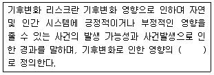
- 선별효과×크기
- 노출도×빈도
- 발생확률×규모
- 민감도×영향정도
(정답률: 50%)
3. 기후변화 당사국 총회에서 주요 결정 내용으로 옳지 않은 것은?
- 2007년 COP13 발리 회의에서 2012년 이후 포괄적인 기후변화 대책 협상 프로세스를 제시하는 발리로드맵이 채택되었다.
- 2010년 COP16 멕시코 칸쿤 회의에서는 기술메커니즘을 설립하고 구성기구인 기술집행위원회와 기후기술센터 및 네트워크가 COP 지도하에서 활동하기로 하였다.
- 2012년 COP18 카타르 도하 회의에서 GCF를 한국의 인천의 송도에 설치하기로 공식 확정하였다.
- 2015년 COP21 파리회의에서는 '녹색기후기금'의 초기재원조성 준비작업을 완료하였다.
(정답률: 56%)
4. 교토메커니즘(Kyoto Protocol)의 3가지 구조에 포함되지 않는 것은?
- 배출권거래제도(Emission Trading)
- 공동이행제도(Joint Implementation)
- 지속가능개발(Sustainable Development)
- 청정개발체제(Clean Development Mechanism)
(정답률: 94%)
5. 다음 중 온실가스이면서 대기 중에 가장 저농도로 존재하는 것은?
- 아산화질소
- 메탄
- 육불화황
- 아르곤
(정답률: 74%)
6. 기후변화에 의한 잠재적인 영향과 잔여영향에 관한 설명으로 가장 적합한 것은?
- 잠재적인 영향은 적응을 고려할 경우 나타나는 기후변화로 인한 영향을 의미하며, 잔여영향은 적응으로 회피될 수 있는 영향 부분을 포함한 영향을 말한다.
- 잠재적인 영향은 적응을 고려할 경우 나타나는 기후변화로 인한 영향을 의미하며, 잔여영향은 적응으로 회피될 수 있는 영향 부분을 제외한 영향을 말한다.
- 잠재적인 영향은 적응을 고려하지 않을 경우 나타나는 기후변화로 인한 영향을 의미하며, 잔여영향은 적응으로 회피될 수 있는 영향 부분을 포함한 영향을 말한다.
- 잠재적인 영향은 적응을 고려하지 않을 경우 나타나는 기후변화로 인한 영향을 의미하며, 잔여영향은 적응으로 회피될 수 있는 영향 부분을 제외한 영향을 말한다.
(정답률: 80%)
7. 기후변화 관련 국제기구 중 ( )안에 알맞은 것은?
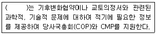
- SBSTA
- SBI
- WMO
- GEO
(정답률: 94%)
8. 우리나라 기후변화 영향 중 식생변화로 가장 거리가 먼 것은?
- 개엽시기가 빨라진다.
- 개화시기가 지연된다.
- 고립된 고산대 식물이 멸종되기 쉽다.
- 고도가 낮은 곳의 온대성 식물이 산위로 확장한다.
(정답률: 91%)
9. 다음 중 UNFCCC에서 규제하고 있는 온실가스가 아닌 것은?
- 수소불화탄소
- 이산화질소
- 육불화황
- 과불화탄소
(정답률: 89%)
10. 기후변화에 대한 유럽연합의 대응에 관한 설명으로 가장 거리가 먼 것은?
- 유럽에서는 기후변화 문제에 적극적으로 대응해야 한다는 인식이 사회 정치적으로 광범위하게 당연한 것으로 수용되어 왔다.
- 2000년 교토의정서 비준논쟁 당시, 유럽연합에서는 대부분 산업계와 석유업계는 교토의정서 비준에 대해 강한 반대 입장을 견지하였다.
- 유럽연합은 내부적으로 온실가스 감축에 관한 부담공유 협정을 맺고 있었다.
- 유럽연합의 적극적인 기후변화정액은 유업연합체제의 독특한 정치적 구조인 분산된 거버넌스를 토대로 하고 있다.
(정답률: 75%)
11. 전 지구 기후변화 시나리오 “순차접근”의 순서로 가장 적합한 것은?
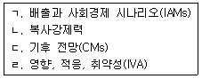
- ㄱ → ㄴ → ㄷ → ㄹ
- ㄷ → ㄴ → ㄹ → ㄱ
- ㄷ → ㄹ → ㄴ → ㄱ
- ㄴ → ㄱ → ㄹ → ㄷ
(정답률: 69%)
12. 지구의 복사 균형이 변하게 되는 3가지 주요요인으로 거리가 먼 것은?
- 태양복사 입사량의 변화
- 지하 화석연료 개발의 변화
- 지구에서 외부로 되돌아가는 장파 복사의 변화
- Albedo의 변화
(정답률: 87%)
13. 개발도상국의 산림전용 및 황폐화 방지, 산림보전, 지속가능한 산림경영 등 활동을 통한 기후변화 저감활동은 무엇인가?
- LULUCF
- A/R CDM
- REDD+
- AFOLU
(정답률: 65%)
14. 제21차 기후변화협약 당사국총회(COP21)는 신기후체제 합의문인 “파리 협정(Paris Agreement)”을 채택하였으며, 그 중 장기목표에 대한 설명 중 ( )안에 가장 알맞은 것은?
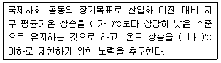
- 가：2.5, 나：2.0
- 가：3.0, 나：2.5
- 가：2.0, 나：1.5
- 가：1.5, 나：2.0
(정답률: 81%)
15. 다음은 탄소배출권의 개념에 관한 설명이다. ( )안에 가장 적합한 것은?
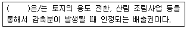
- AAU
- ERU
- RMU
- CER
(정답률: 65%)
16. 아산화질소 0.1톤, 메탄 1톤, 이산화탄소 20톤을 이산화탄소 상당량톤(tCO2-eq)으로 환산한 값은 얼마인가? (단, 아산화질소(N2O)와 (CH4)의 GWP는 각각 310, 21이다.)
- 52
- 53
- 62
- 72
(정답률: 75%)
17. 다음 설명하는 당사국회의는?
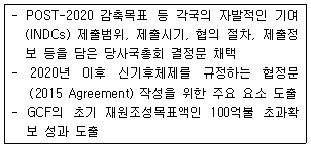
- 카타르 도하 총회
- 페루 리마 총회
- 프랑스 파리 총회
- 폴란드 바르샤바 총회
(정답률: 66%)
18. “기후변화에 대한 정부간 패널(IPCC)”의 실행그룹 중 기후변화의 영향평가와 적응 및 취약성 분야의 역할을 담당하는 그룹명은?
- Working Group 1
- Working Group 2
- Working Group 3
- Task Force
(정답률: 76%)
19. 온실가스에 관한 설명으로 옳지 않은 것은?
- 육불화황은 전기제품이나 변압기 등의 절연체로 사용된다.
- 수소불화탄소와 과불화탄소는 CFCs의 대체물질로 냉매, 소화기 등에 사용된다.
- 이산화탄소는 탄소 성분과 대기 중의 산소가 결합하는 연소 반응을 통해 대기 중에 배출된다.
- 아산화질소는 온실가스 중에서 가장 높은 비중을 차지하고 있다.
(정답률: 94%)
20. 국가 및 지자체 온실가스 인벤토리 산정 대상분야로 거리가 먼 것은?
- 에너지
- 산업공정
- 농업
- 생태계
(정답률: 94%)
2과목: 온실가스 배출의 이해
21. 온실가스ㆍ에너지 목표관리 운영 등에 관한 지침상 이동연소(도로)에서 도로 부문의 배출시설에 해당하지 않는 것은?
- 건설기계
- 무동력 자전거
- 화물자동차
- 농기계
(정답률: 88%)
22. 온실가스ㆍ에너지 목표관리 운영 등에 관한 지침상 아연생산을 위한 보고대상 배출시설 중 다음 시설에 해당하는 것은?
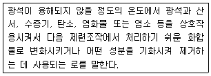
- 전해로
- 용융로
- 융해로
- 배소로
(정답률: 78%)
23. 온실가스ㆍ에너지 목표관리 운영 등에 관한 지침상 다음 연료에 해당하는 것은?
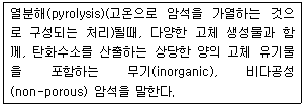
- 유모혈암(Oil Shale)
- 역청암(Tar Sands)
- 갈탄 연탄(Brown Coal Briquettes)
- 점결탄(Coking Goal)
(정답률: 75%)
24. 다음 중 CaO와 물이 반응하여 생성되는 것은?
- 생석회
- 석회석
- 소석회
- 수산화칼륨
(정답률: 42%)
25. 온실가스ㆍ에너지 목표관리 운영 등에 관한 지침상 대표적인 배연탈황시설의 반응 중 생성되는 물질과 거리가 먼 것은?
- CaSO3(아황산칼슘)
- CaSO4ㆍ2H2O(석고)
- CaO(산화칼슘)
- H2SO3(아황산)
(정답률: 76%)
26. 온실가스ㆍ에너지 목표관리 운영 등에 관한 지침상 암모니아 생산공정인 수소제조 공정에서 유체 연료로부터 수소를 제조하는 다음의 방법 중 가장 많이 이용되고 있는 것은?
- 변성 개질법
- 메탄 개질법
- 수증기 개질법
- 질소 개질법
(정답률: 75%)
27. 온실가스ㆍ에너지 목표관리 운영 등에 관한 지침상 철강생산 공정의 보고대상 배출시설 중 “전로”에 관한 설명으로 옳지 않은 것은?
- 산화제로 순산소가스(순도 99.5% 이상)를 이용하고 용제(Flux)로는 석회석과 형석을 사용한다.
- 주로 탈탄 또는 탈인반응에 이용된다.
- 초음속의 수소제트를 용선에 불어넣어 약 5분 이내에 급속히 정련시키므로 제강시간은 비교적 짧으나 고철의 사용비는 크다.
- 용광로에서 제조된 선철(용선)을 정련하여 용강으로 만드는데 사용된다.
(정답률: 57%)
28. 온실가스ㆍ에너지 목표관리 운영 등에 관한 지침상 석유화학제품 생산 공정의 공정배출 보고대상 배출시설로 옳지 않은 것은?
- 메탄올 반응시설
- 하이드록실아민 반응시설
- 테레프탈산 생산시설
- 아크릴로니트릴 반응시설
(정답률: 60%)
29. 온실가스ㆍ에너지 목표관리 운영 등에 관한 지침상 PFC-14인 CF4 온실가스가 공정배출로 배출되는 산업군과 가장 관계가 깊은 것은?
- 전자산업
- 철강산업
- 광물생산
- 석유정제
(정답률: 75%)
30. 온실가스ㆍ에너지 목표관리 운영 등에 관한 지침상 HCFC-22 생사과정에서 부산물 형태로 배출되는 온실가스로 가장 적합한 것은?
- SH6
- HFC-12
- HFC-23
- N2O
(정답률: 63%)
31. 온실가스ㆍ에너지 목표관리 운영 등에 관한 지침상 촉매를 활용한 수증기 개질로 암모니아를 생산하는 공정이다. ( )안에 알맞은 것은?
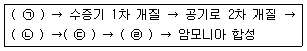
- ㉠ 천연가스 탈황, ㉡ 이산화탄소 제거, ㉢ 메탄화, ㉣ 일산화탄소의 전환
- ㉠ 일산화탄소의 전환, ㉡ 천연가스 탈황, ㉢ 메탄화, ㉣ 이산화탄소 제거
- ㉠ 이산화탄소 제거, ㉡ 천연가스 탈황, ㉢ 메탄화, ㉣ 일산화탄소의 전환
- ㉠ 천연가스 탈황, ㉡ 일산화탄소의 전환, ㉢ 이산화탄소 제거, ㉣ 메탄화
(정답률: 79%)
32. 온실가스ㆍ에너지 목표관리 운영 등에 관한 지침상 최적가용기술(BAT) 개발 시 고려요소와 가장 거리가 먼 것은?
- 환경피해를 방지함으로써 얻을 수 있는 이익이 최적 가용기술을 적용하는데 필요한 비용보다 커야 한다.
- 폐기물의 발생을 적게 하고 폐기물 회수와 재사용 등을 촉진할 수 있는지 여부를 고려하여야 한다.
- 기술의 진보와 과학의 발전을 고려한다.
- 실증된 기술이라도 파일롯 규모인 경우는 원칙적으로 최적가용기술 범위에서 제외하여 고려한다.
(정답률: 82%)
33. 온실가스ㆍ에너지 목표관리 운영 등에 관한 지침상 외부 스팀 공급업체에 공급받은 열(스팀)에 대한 간접배출량 산정ㆍ보고 범위로 가장 적합한 것은?
- 관리업체 사업장 단위
- 관리업체 전력 배출시설 단위
- 관리업체의 10MJ당 스팀사용 설비 단위
- 관리업체의 50GJ당 스팀사용 공정 단위
(정답률: 65%)
34. 온실가스ㆍ에너지 목표관리 운영 등에 관한 지침상 Fe 촉매를 사용하는 수증기 개질법으로 암모니아를 합성할 때 수소와 질소의 비율은?
- 1：1
- 2：1
- 3：1
- 4：1
(정답률: 70%)
35. 2006 IPCC 국가 인벤토리 산정을 위한 가이드라인 기준에 따른 경소백운석(고토석회) 생산량 당 CO2 배출계수(tCO2/t-생산량)로 옳은 것은?
- 0.720
- 0.750
- 0.755
- 0.770
(정답률: 42%)
36. 다음은 온실가스ㆍ에너지 목표관리 운영 등에 관한 지침상 아연생산 배출활동 중 1차 생산공정의 하나에 해당하는 방법이다. ( )안에 알맞은 것은?
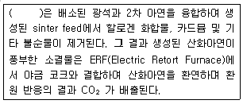
- 전열증류법
- ISF(Imperil Smelting Furnace)를 사용하는 건식 야금 공정
- 전해법
- 습식제련침지법
(정답률: 45%)
37. 매립시설의 기능을 3가지로 대별한 구분으로 거리가 먼 것은?
- 저류기능
- 회복기능
- 차수기능
- 처리기능
(정답률: 70%)
38. 온실가스ㆍ에너지 목표관리 운영 등에 관한 지침상 전자산업의 보고대상 배출시설 중 증착시설(CVD 등)에 대한 설명으로 옳지 않은 것은?
- 일반적인 CVD 장치는 크게 원료수송부, 반응기, 부산물 배출구의 세부분으로 나눌 수있다.
- 산이나 알칼리 용액에 표면처리를 위하여 담구거나 원료 및 제품을 중화시키는 공정이다.
- CVD법에 의한 화학반응의 종류로는 이종반응(heterogeneous reaction)이 대표적이다.
- 기체, 액체 혹은 고체상태의 원료화합물을 반응기 내에 공급하여 기판 표면에서의 화학적 반응을 유도함으로써 반도체 기관 위에 고체 반응생성물인 박막층을 형성하는 공정이다.
(정답률: 77%)
39. 온실가스ㆍ에너지 목표관리 운영 등에 관한 지침상 Tier 1에 의한 하수처리장의 온실가스 배출량 산정에서 필요한 자료와 거리가 먼 것은?
- 유입 및 방류수의 BOD5 농도
- 슬러지의 반출량
- 메탄 회수량
- 하수 체류시간
(정답률: 56%)
40. 온실가스ㆍ에너지 목표관리 운영 등에 관한 지침상 고정연소(고체연료)시설 중 본체 내에 노통화로, 연관 등을 설치한 것으로 구조가 간단하고 일반적으로 널리 쓰이고 있으나, 고압용이나 대용량에는 적합지 않으며, 입식보일러, 연관보일러 등이 해당하는 시설은?
- 수관식보일러
- 주철형보일러
- 유동상보일러
- 원통형보일러
(정답률: 72%)
3과목: 온실가스 산정과 데이터 품질관리
41. 온실가스ㆍ에너지 목표관리 운영 등에 관한 지침상 항공부문의 이동연소에 의한 온실가스 배출량 산정기준에 관한 설명으로 옳지 않은 것은?
- 배출량 산정방법론은 Tier 1, 2, 3의 세 등급으로 구분할 수 있다.
- Tier 2수준의 배출량 산정방법론은 제트 연료를 사용하는 항공기에 적용된다.
- Tier 1수준에서 활동자료의 측정불확도는 ±7.5% 이내이다.
- Tier 2수준에서 활동자료의 측정불확도는 ±5.0% 이내이다.
(정답률: 61%)
42. 온실가스ㆍ에너지 목표관리 운영 등에 관한 지침상 철강생산공정의 전기로 시설의 배출 활동이 다음과 같을 때, Tier 2 산정방법으로 전기로에서 조강생산에 따른 CO2 배출량(tCO2)을 계산하면?
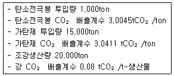
- 48,621
- 49,376
- 50,221
- 53,276
(정답률: 22%)
43. 온실가스ㆍ에너지 목표관리 운영 등에 관한 지침상 기체연료를 고정연소하는 배출시설에 Tier 2를 적용할 경우 매개변수별 관리기준에 관한 설명으로 옳지 않은 것은?
- 활동자료는 사업자 또는 연료공급자에 의해 측정된 불확도 ±5.0%이내의 연료사용량 자료를 활용한다.
- 열량계수는 국가고유발열량값을 사용한다.
- 배출계수는 국가고유배출계수를 사용한다.
- 산화계수는 기본값인 1.0을 적용한다.
(정답률: 71%)
44. 온실가스ㆍ에너지 목표관리 운영 등에 관한 지침상 고체연료의 고정연소 과정에서 배출되는 온실가스 배출량 산정 시 산화계수(f)에 대한 설명으로 옳지 않은 것은?
- Tier 2 산정등급에서 센터가 별도의 계수를 공표하여 지침에 수록된 경우 그 값을 적용한다.
- Tier 2 산정등급에서 벌전 부문은 0.995를 적용한다.
- Tier 3 산정등급에서는 사업자가 자체 개발한 산화계수를 사용할 수 있다.
- Tier 3 산정등급에서는 연료공급자가 분석하여 제공한 고유 산화계수를 사용할 수 있다.
(정답률: 49%)
45. 온실가스ㆍ에너지 목표관리 운영 등에 관한 지침상 배출량 등의 산정 절차로 옳은 경우?
- 조직 경계의 설정→배출활동별 배출량 산정방법론의 선택→모니터링 유형 및 방법의 설정→배출량 산정 및 모니터링 체계의 구축→배출활동의 확인ㆍ구분→배출량 산정
- 조직 경계의 설정→모니터링 유형 및 방법의 설정→배출량 산정 및 모니터링 체계의 구축→배출활동별 배출량 산정방법론의 선택→배출활동의 확인ㆍ구분→배출량 산정
- 조직 경계의 설정→배출활동별 배출량 산정방법론의 선택→배출활동의 확인ㆍ구분→배출량 산정 및 모니터링 체계의 구축→모니터링 유형 및 방법의 설정→배출량 산정
- 조직 경계의 설정→배출활동의 확인ㆍ구분→모니터링 유형 및 방법의 설정→배출량 산정 및 모니터링 체계의 구축→배출활동별 배출량 산정방법론의 선택→배출량 산정
(정답률: 44%)
46. 온실가스ㆍ에너지 목표관리 운영 등에 관한 지침상 모니터링 계획 작성원칙 중 “모니터링 계획에 보고된 동일 배출시설 및 배출활동에 관한 데이터는 상호비교가 가능하도록 해야한다.”는 것과 가장 관련이 깊은 원칙은?
- 준수성
- 일관성
- 투명성
- 완전성
(정답률: 58%)
47. 온실가스ㆍ에너지 목표관리 운영 등에 관한 지침상 관리업체 지정과 관련하여 건물이 건축물 대장 또는 등기부에 각각 등재되어 있거나 소유지분을 달리하고 있는 경우에 관한 사항으로 옳지 않은 것은?
- 인접한 대지에 동일 법인이 여러 건물을 소유한 경우에 한 건물로 본다.
- 건물의 소유구분이 지분형식으로 되어 있을 경우에는 지분별로 건물의 소유지분을 구분한다.
- 에너지 관리의 연계성이 있는 복수의 건물을 한 건물로 본다.
- 동일 부지 내에 있거나 인접 또는 연접한 집합건물이 동일한 조직에 의해 에너지 공급ㆍ관리 또는 온실가스 관리 등을 받을 경우에도 한 건물로 간주한다.
(정답률: 70%)
48. 온실가스ㆍ에너지 목표관리 운영 등에 관한 지침상 연속측정방법에서 결측자료에 따른 대체자료 생성기준으로 옳지 않은 것은?
- 정도검사 기간의 경우에는 정상 마감된 전월의 최근 1개월간의 30분 평균자료
- 교정검사 불합격의 경우에는 정상 자료 중 최근 30분 평균자료
- 장비점검 시에는 정상 자료 중 최근 30분 평균자료
- 미수신 자료의 경우에는 정상 자료 중 최근 30분 평균자료
(정답률: 60%)
49. 온실가스ㆍ에너지 목표관리 운영 등에 관한 지침상 관리업체의 A매립장에서 고형폐기물의 매립에 따른 온실가스 배출량을 산정할 경우 매개변수별 관리기준에 관한 설명으로 옳지 않은 것은?
- 메탄보정계수(MCF)는 IPCC 가이드라인 기본값을 적용한다.
- 폐기물 성상별 매립량은 1991년 1월 1일 이후 매립된 폐기물에 대해서만 수집한다.
- 메탄으로 전환가능한 DOC 비율은 IPCC 가이드라인 기본값인 0.5를 적용한다.
- 산화율은 IPCC 가이드라인 기본계수를 사용한다.
(정답률: 70%)
50. 온실가스ㆍ에너지 목표관리 운영 등에 관한 지침상 산정등급(Tier) 분류에 관한 설명으로 옳은 것은?
- Tier 1：사업장 배출시설 및 감축기술단위의 배출계수 등 사당 부분을 시험 분석을 통하여 개발한 매개변수 값을 활용하는 배출량 산정방법론
- Tier 2：활동자료, IPCC 기본 배출계수를 활용하여 배출량을 산정하는 방법론
- Tier 3：국가 고유 배출계수 및 발열량 등을 일정부분 시험 분석을 통하여 개발한 매개변수 값을 활용하는 배출량 산정방법론
- Tier 4：굴뚝자동측정기기 등 배출가스 연속측정방법을 활용한 배출량 산정방법론
(정답률: 71%)
51. 온실가스ㆍ에너지 목표관리 운영 등에 관한 지침상 활동자료 수집에 따른 모니터링 유령에 관한 설명으로 옳지 않은 것은?
- B유형은 배출시설별로 주기적으로 교정검사를 실시하는 내부 측정기기가 설치되어 있을 경우 해당 측정기기를 활용하여 활동자료를 결정하는 방법이다.
- C유형은 연료 및 원료의 공급자가 상거래 등의 목적으로 설치ㆍ관리하는 측정기기를 이용하여 배출시설의 활동자료를 모니터링 하는 방법이다.
- B유형은 구매량 기반 측정기기와 무관하게 배출시설 활동자료를 교정된 자체 측정기기를 이용하여 모니터링 하는 방법이다.
- C유형은 각 배출시설별 활동자료를 구매연료 및 원료 등의 메인 측정기기 활동자료에서 타당한 배분방식으로 모니터링하는 방법이다.
(정답률: 60%)
52. 온실가스 배출권거래제 운영을 위한 검증지침에서 외부사업 온실가스 감축량을 검증 시 “대표적인 자료 혹은 배출시설의 배출량을 선택하여 원시데이터의 발생부터 배출량 산정까지의 흐름을 근거자료로서 추적”하는 검증기겁을 무엇이라 하는가?
- 관찰
- 재계산
- 분석
- 역추적
(정답률: 79%)
53. 온실가스ㆍ에너지 목표관리 운영 등에 관한 지침상 납 생산에 대한 온실가스 배출량 산정을 산정하는 방법에 대한 설명으로 옳지 않은 것은?
- 보고대상 온실가스는 CO2와 CH4이다.
- 배출량 산정방법론으로 Tier 1∼4까지 4가지 방법론이 있다.
- Tier 1 방법론은 생산된 납의 양(t)에 납생산량 당 배출계수(tCO2/t-생산된 납)를 곱하여 배출량을 산정하는 방법이다.
- Tier 3 방법론 적용을 위해서는 사업자가 자체적으로 고유 배출계수를 개발하여 적용하여야 한다.
(정답률: 56%)
54. 온실가스ㆍ에너지 목표관리 운영 등에 관한 지침상 ( )안에 들어갈 용어로 가장 적합한 것은?
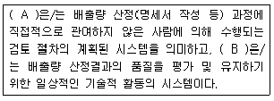
- A：품질보증(Quality Assurance)
B：품질관리(Quality Control) - A：품질관리(Quality Control)
B：품질보증(Quality Assurance) - A：현장검증
B：리스크 분석 - A：리스크 분석
B：현장검증
(정답률: 79%)
55. 온실가스ㆍ에너지 목표관리 운영 등에 관한 지침상하ㆍ폐수에서 발생하는 온실가스 배출량 산정 시 CO2는 배출량 산정에서 제외하는 주된 원인으로 가장 적합한 사항은?
- 배출계수가 없으므로
- 생물에서 기원하므로
- 하ㆍ폐수에서 CO2가 발생하지 않으므로
- 소량 발생하므로
(정답률: 66%)
56. 온실가스ㆍ에너지 목표관리 운영 등에 관한 지침상 다음 석유 정제활동에서 Tier 2를 이용한 온실가스 배출량은?
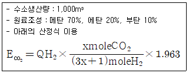
- 0.43t CO2
- 0.52t CO2
- 0.68t CO2
- 1.25t CO2
(정답률: 42%)
57. 다음은 온실가스ㆍ에너지 목표관리 운영 등에 관한 지침상 온실가스 측정불확도 산정절차이다. ( )안에 알맞은 것은?
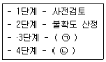
- ㉠ 직접불확도 산정, ㉡ 간접불확도 산정
- ㉠ 합성불확도 산정, ㉡ 배출량 불확도 계산
- ㉠ 합성불확도 산정, ㉡ 간접불확도 산정
- ㉠ 직접불확도 산정, ㉡ 배출량 불확도 계산
(정답률: 72%)
58. 온실가스ㆍ에너지 목표관리 운영 등에 관한 지침상 외부에서 공급을 받아 전력을 사용하는 A사업장은 2016년에 100,500kWh, 2017년에 110,600kWh를 사용하였다. A사업장이 2017년 외부전력 사용으로 인한 온실가스 배출량은 약 얼마인가? (단, 전력 배출계수 및 GWP는 다음과 같다.)
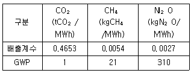
- 47 tCO2-eq
- 52 tCO2-eq
- 62 tCO2-eq
- 73 tCO2-eq
(정답률: 59%)
59. 온실가스ㆍ에너지 목표관리 운영 등에 관한 지침상 온실가스 배출량 산정 시 발열량에 관한 설명으로 옳지 않은 것은?
- 총발열량이란 연료의 연소과정에서 발생하는 수증기의 잠열을 포함한 발열량을 말한다.
- 1cal는 4.1868J이다.
- MJ은 106J이다.
- Nm3는 15℃, 1기압 상태의 체적을 말한다.
(정답률: 75%)
60. 온실가스 배출권거래제 운영을 위한 검증지침에서 “온실가스 배출량의 산정결과와 관련하여 정형화된 양을 합리적으로 추정한 값의 분산특성을 나타내는 정도”를 무엇이라 하는 가?
- 리스크
- 중요성
- 합리적 보증
- 불확도
(정답률: 75%)
4과목: 온실가스 감축관리
61. 온실가스 감축프로젝트들에 대한 경제성 분석 평가 시 비용편익 분석에 있어서 적용되는 판단의 기준으로 거리가 먼 것은?
- NPC(Net Present Value)
- Benefit Cost Ratio
- IRR(Internal Rate of Return)
- RMU(Removal Unit)
(정답률: 63%)
62. 온실가스 배출량 감축을 위해 정부정책 세부방향을 설정하고자 한다. 다음 중 온실가스 배출량 가축방법으로 옳은 것은?
- 풍력발전을 화력발전으로 대체
- 건축물 내 LED 등을 형광등으로 교체
- 매립장에서 발생하는 LFG(Land Fill Gas)를 연료로 활용
- 사업장 내 수소자동차를 가솔린자동차로 교체
(정답률: 68%)
63. CDM 프로젝트 사업계획서(PDD：Project Design Document)는 제안하고자 하는 감축 프로젝트에 대한 계획과 정보를 적은 문서를 말하는데, 다음 중 사업계획서에 꼭 다루어야 할 항목으로 가장 거리가 먼 것은?
- 프로젝트의 개요 및 지역 이해관계자와의 협의사항
- 산정된 승인방법론에 입각한 프로젝트의 설명
- 프로젝트가 환경에 미치는 영향에 대한 설명
- 프로젝트 시행을 위한 초기투자 원가 세부 분석자료
(정답률: 52%)
64. CDM EB가 제시하는 추가성 분석방법에서는 프로젝트의 추가성을 단계적으로 평가할 수 있도록 구성하고 있는데, 다음 중 그 단계가 순서대로 옳게 배열된 것은?
- 최초 시도 여부(First-of-its-kind project activities) - 대안 분석(Identification of alternatives) - 투자 분석(Investment analysis) - 장벽 분석(Barrier analysis) - 관례 분석(Common Practice analysis)
- 최초 시도 여부(First-of-its-kind project activities) - 투자 분석(Investment analysis) - 대안 분석(Identification of alternatives) - 장벽 분석(Barrier analysis) - 관례 분석(Common Practice analysis)
- 최초 시도 여부(First-of-its-kind project activities) - 대안 분석(Identification of alternatives) - 투자 분석(Investment analysis) - 관례 분석(Common Practice analysis) - 장벽 분석(Barrier analysis)
- 최초 시도 여부(First-of-its-kind project activities) - 장벽 분석(Barrier analysis) - 대안 분석(Identification of alternatives) - 투자 분석(Investment analysis) - 관례 분석(Common Practice analysis)
(정답률: 52%)
65. CDM사업 모니터링 보고서의 QA/QC 절차 작성법에 관한 내용으로 가장 거리가 먼 것은?
- 절차서는 CDM 프로젝트의 모니터링 계획에 기준하여 작성한다.
- 베이스라인 배출계수는 PDD 베이스라인 방법론에 의거한 값이다.
- 모니터링 매개변수의 변경이 있는 경우 DOE의 평가를 거쳐 CDM EB의 승인을 득하여야 한다.
- 전기안전담당자는 모니터링 담당업무를 겸할 수 없지만 모니터링 담당자는 전기안전관리를 담당할 수 있다.
(정답률: 69%)
66. 최근 온실가스 처리 및 재활용 문제의 일환인 CO2의 화학적 전환처리기술 중 촉매화학법의 전환생성물로 옳지 않은 것은? (단, CO2의 화학적 전환처리기술은 촉매화학법, 전기화학법, 광화학법 등이 있다.)
- CO2에서 CO로의 전환
- CO2에서 HCOOH HCHO로의 전환
- CO2에서 CH4와 O2로의 전환
- CO2에서 CH3OH로의 전환
(정답률: 71%)
67. 연료의 산화에 의해서 생기는 화학에너지를 직접 전기에너지로 변환시키는 연료전지의 특징에 관한 설명으로 거리가 먼 것은?
- 환경공해가 감소되어 CO2 발생이 전혀 없다.
- 연료전지를 이용한 발전시스템에서 연료전지는 발전효율이 40∼60% 정도이며, 열병합발전할 경우에는 80% 이상 가능하다.
- 회전부위가 없어 소음이 매우 낮고, 다량의 냉각수가 불필요하다.
- 도심 부근의 설치가 가능하여 송배전시설비 및 전력손실이 적은 편이다.
(정답률: 50%)
68. 교토의정서에서 규정하고 있는 6대 온실가스가 아닌 것은?
- CH4
- NO2
- HFCs
- SF6
(정답률: 80%)
69. 한계저감비용(MAC：Marginal Abatement Cost)에 관한 설명으로 옳은 것은?
- 온실가스 1톤을 줄이는데 소요되는 비용이다.
- 온실가스 감축 수단별 초기 비용을 제외한 1년간 운영비를 반영한 비용이다.
- 온실가스 감축을 위한 운영비용은 반영하지 않는다.
- 총 사업기간 중 최초 1년간 감축에 지출된 비용만 반영한다.
(정답률: 56%)
70. 온실가스 저감노력으로 인한 온실가스 저감량을 계산하는 비교기준으로서, 온실가스 저감에 해당하는 사업이 수행되지 않았을 경우의 배출량 및 흡수량에 대한 계산 또는 예측을 의미하는 것은?
- 시나리오
- 벤치마크
- 베이스라인
- 모니터링
(정답률: 66%)
71. 온실가스ㆍ에너지 목표관리 운영 등에 관한 지침상 온실가스 다배출사업장은 감축목표를 부여받은데, 온실가스 감축과 관련하여 사업장 입장에서 취할 수 있는 전략수립의 순서로 가장 적합한 것은?
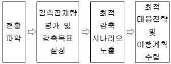
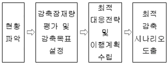
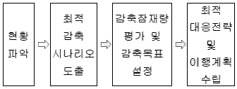
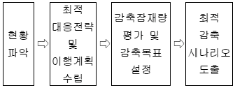
(정답률: 75%)
72. 다음 온실가스 감축방법 중 간접 감축방법에 해당하는 것은?
- 신생에너지 적용
- 대체물질 적용
- 온실가스 활용
- 공정 개선
(정답률: 53%)
73. 시멘트생산공정에서 온실가스를 감축시키는 방법과 가장 거리가 먼 것은?
- CaO 함량의 비율이 높은 비탄산염 원료의 사용량을 증가시킨다.
- 시멘트성분 중 클링커 함량을 줄인다.
- 원료와 연료의 수분함량을 줄인다.
- 폐유사용량을 줄이고 고열량인 석탄사용량을 증가시킨다.
(정답률: 75%)
74. 온실가스 감축사업에서 온실가스 베이스라인 배출량에 해당하는 것은?
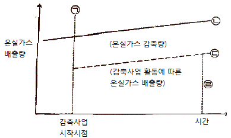
- ㉠
- ㉡
- ㉢
- ㉣
(정답률: 58%)
75. A관리업체는 다음과 같은 기준년도 배출량을 가진 C시설에 대한 시설규모를 최초 결정하고자 한다. 이때 적용되는 배출량은? (단, tCO2 eq/년)
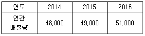
- 51,000
- 49,333
- 49,000
- 48,000
(정답률: 36%)
76. CDM 사업자는 일정기간 동안 사업에 의한 감축활동을 모니터링하고 그 결과를 모니터링 보고서로 정리ㆍ작성하여 DOE에게 검증을 의뢰하는데, DOE가 해야 할 CDM 모니터링 보고서 검증업무 수행 절차를 순서대로 나열한 것으로 가장 적합한 것은?
- 시정조치 → 문서검토 → 현장심사 → 검증보고서 작성
- 현장심사 → 문서검토 → 시정조치 → 검증보고서 작성
- 문서검토 → 현장심사 → 검증보고서 작성 → 시정조치
- 문서검토 → 현장심사 → 시정조치 → 검증보고서 작성
(정답률: 49%)
77. 이산화탄소 포집 및 저장(CCs) 기술 분류 중 CO2 포집 기술 구분과 거리가 먼 것은?
- 연소 후 포집
- 연소 전 포집
- 순질소 연소 포집
- 순산소 연소 포집
(정답률: 70%)
78. 다음은 연료전지의 발전시스템 구성요소에 관한 설명이다. ( )안에 가장 적합한 것은?
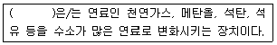
- 단위전지
- 스택
- 전력변환기
- 연료개질기
(정답률: 66%)
79. 해안지역에 시간당 1MW 규모의 풍력발전소를 건설하여 전력생산을 CDM사업으로 추진하려고 한다. 풍력발전의 이용률은 20%이고, 생산된 전력은 모두 전력계통으로 공급된다고 가정할 때, 이 사업에 의한 연간 온실가스 감축량은 약 얼마인가? (단, 전력계통의 온실가스 배출계수는 0.8tCO2/MWh이고, 풍력발전소 자체 전기사용량은 무시하고, 1톤 이하 온실가스 감축량도 무시한다.)
- 1,401tCO2/년
- 1,523tCO2/년
- 1,658tCO2/년
- 1,773tCO2/년
(정답률: 46%)
80. 화학 산업에서 우선적으로 추진해야 할 온실가스 감축 수단은 에너지 효율을 높이고 화학연료 사용을 최소화하는 것이다. 다음 중 에너지 효율 개선을 위해 적용할 수 있는 공정개선과 가장 거리가 먼 것은?
- 설비 및 기기효율을 개선
- 에너지 효율 제고를 위해 제조법의 전환 및 공정 개발
- 배출 에너지의 회수
- 생산량 증가를 통한 원단위 개선
(정답률: 80%)
5과목: 온실가스관련 법규
81. 다음은 저탄소 녹색성장 기본법령상 정부가 범지구적인 온실가스 감축에 적극 대응하고 저탄소 녹색성장을 효율적ㆍ체계적으로 추진하기 위한 감축목표이다. ( )안에 가장 적합한 것은?(관련 규정 개정전 문제로 여기서는 기존 정답인 4번을 누르면 정답 처리됩니다. 자세한 내용은 해설을 참고하세요.)
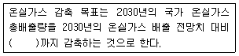
- 100분의 15
- 100분의 25
- 100분의 30
- 100분의 37
(정답률: 65%)
82. 온실가스 배출권의 할당 및 거래에 관한 법률상 할당대상업체는 이행연도 종료일부터 6개월 이내에 대통령령으로 정하는 바에 따라 배출권(종료된 이행연도의 배출권을 말한다)을 주무관청에 제출하여야 하는데, 이 배출권을 제출하지 아니한 자에 관한 과태료 부과ㆍ징수기준은?
- 2백만원 이하의 과태료를 부과ㆍ징수한다.
- 3백만원 이하의 과태료를 부과ㆍ징수한다.
- 5백만원 이하의 과태료를 부과ㆍ징수한다.
- 1천만원 이하의 과태료를 부과ㆍ징수한다.
(정답률: 70%)
83. 저탄소 녹색성장 기본법상 정하는 사업자의 책무로 거리가 먼 것은?
- 국제협상의 동향 및 주요 국가의 정책을 분석하여 적절한 대책을 마련하여야 한다.
- 녹색경영을 선도하여야 하며 기업활동의 전 과정에서 온실가스와 오염물질의 배출을 줄여야 한다.
- 정부와 지방자치단체가 실시하는 저탄소 녹색성장에 관한 정책에 적극 참여하고 협력하여야 한다.
- 녹색기술 연구개발과 녹색산업에 대한 투자 및 고용을 확대하는 등 환경에 관한 사회적ㆍ윤리적 책임을 다하여야 한다.
(정답률: 79%)
84. 온실가스ㆍ에너지 목표관리 운영 등에 관한 지침상 온실가스 소량배출사업장 기준으로 옳은 것은?
- 온실가스 배출량이 업체 내 모든 사업장의 온실가스 배출량 등 총합의 1,000분의 5 미만이어야 하고, 온실가스 배출량은 kilotonnes CO2-eq 미만이고 에너지 소비량은 55terajoules 미만인 사업장
- 온실가스 배출량이 업체 내 모든 사업장의 온실가스 배출량 등 총합의 1,000분의 50 미만이어야 하고, 온실가스 배출량은 3kilotonnes CO2-eq 미만이고 에너지 소비량은 55terajoules 미만인 사업장
- 온실가스 배출량이 업체 내 모든 사업장의 온실가스 배출량 등 총합의 1,000분의 5 미만이어야 하고, 온실가스 배출량은 15kilotonnes CO2-eq 미만이고 에너지 소비량은 80terajoules 미만인 사업장
- 온실가스 배출량이 업체 내 모든 사업장의 온실가스 배출량 등 총합의 1,000분의 50 미만이어야 하고, 온실가스 배출량은 15kilotonnes CO2-eq 미만이고 에너지 소비량은 80terajoules 미만인 사업장
(정답률: 64%)
85. 온실가스 배출권의 할당 및 거래에 관한 법률 시행령상 온실가스는 온실가스별 지구온난화계수에 따라 이산화탄소상당량톤으로 환산한 배출권으로 거래하는데, 다음 온실가스 중 지구온난화 계수가 가장 큰 것은?
- HFC-143
- PFC-14
- HFC-152a
- PFC-116
(정답률: 23%)
86. 저탄소 녹색성장 기본법령상 국토교통부장관이 교통부문의 온실가스 감축, 에너지 절약 및 에너지 이용효율 목표를 수립ㆍ시행 시 포함해야 하는 사항과 거리가 먼 것은?
- 에너지 종류별 온실가스 배출권 실거래 현황
- 연차별 온실가스 감축, 에너지 절약 및 에너지 이용효율 목표와 그 이행계획
- 5년 단위의 온실가스 감축, 에너지 절약 및 에너지 이용효율 목표와 그 이행계획
- 자동차, 기차, 항공기, 선박 등 교통수단별 온실가스 배출 현황 및 에너지 소비율
(정답률: 68%)
87. 저탄소 녹색성장 기본법상 녹색성장위원회에 관한 설명으로 옳지 않은 것은?
- 녹색성장위원회는 국가의 저탄소 녹색성장과 관련된 주요 정책 및 계획과 그 이행에 관한 사항을 심의하기 위하여 환경부 소속으로 둔다.
- 녹색성장위원회의 회의는 위원 과반수 출석으로 개의하고, 출석위원 과반수의 찬성으로 의결하지만, 대통령령으로 정하는 경우에는 서면으로 심의ㆍ의결할 수 있다.
- 녹색성장위원회의 업무를 효율적으로 수행ㆍ지원하고 위원회가 위임하는 업무를 검토ㆍ조정 또는 처리하기 위하여 대통령령으로 정하는 바에 따라 위원회에 분과위원회를 둘 수 있다.
- 지방자치단체의 저탄소 녹색성장과 관련된 주요 정책 및 계획과 그 이행에 관한 사항을 심의하기 위하여 시ㆍ도지사 소속으로 지방녹색성장위원회를 둘 수 있다.
(정답률: 33%)
88. 온실가스 배출권의 할당 및 거래에 관한 법률 시행령상 외부사업 온실가스 감축량의 인증에 관한 업무를 부문별 관장기관이 공동으로 정하여 관보에 고시하는 바에 따라 위탁할 수 있는데, 이에 해당하지 않는 것은? (단, 그 밖의 사항 등은 고려하지 않음)
- 농업기술실용화재단
- 한국에너지공단
- 한국환경공단
- 생태계보전공사
(정답률: 59%)
89. 온실가스 배출권의 할당 및 거래에 관한 법률 시행령상 정부는 배출권거래제 도입으로 인한 기업의 경쟁력 감소를 방지하고 배출권 거래를 활성화하기 위하여 대통령령으로 정하는 사업에 대하여 금융상ㆍ세제상의 지원을 할 수 있는데, 이 “대통령령으로 정하는 사업”에 해당하지 않는 것은?
- 온실가스 감축모형 개발 및 배출량 통계 고도화 사업
- 온실가스 저장기술 개발 및 저장설비 설치 사업
- 온실가스 배출량에 대한 측정 및 체계적 관리시스템의 구축 사업
- 부문별 온실가스 배출량 증가 촉진 고도화 구축사업
(정답률: 75%)
90. 온실가스 배출권의 할당 및 거래에 관한 법률 시행령상 배출권의 무상할당 등에 대한 설명으로 옳지 않은 것은?
- 1차 계획기간에는 할당대상업체별로 할당되는 배출권의 전부를 무상으로 할당한다.
- 2차 계획기간에는 할당대상업체별로 할당되는 배출권의 100분의 90을 무상으로 할당한다.
- 3차 계획기간 이후의 무상할당비율은 100분의 90 이내의 범위에서 이전 계획기간의 평가 및 관련 국제 동향 등을 고려하여 할당계획에서 정한다.
- 계획기간에 할당대상업체에 유상으로 할당하는 배출권은 할당대상업체를 대상으로 경매 등의 방법으로 할당한다.
(정답률: 60%)
91. 온실가스 배출권의 할당 및 거래에 관한 법률 시행령상 기획재정부장관과 환경부장관은 배출권거래제 기본계획을 매 계획기간 시작 언제까지 공동으로 수립하여야 하는가?
- 1개월 전까지
- 3개월 전까지
- 6개월 전까지
- 1년 전까지
(정답률: 29%)
92. 온실가스ㆍ에너지 목표관리 운영 등에 관한 지침상 용어의 정의로 옳지 않은 것은?
- “공정배출”이란 제품의 생산 공정에서 원료의 물리ㆍ화학적 반응 등에 따라 발생하는 온실가스의 배출을 말한다.
- “관리업체”란 동일한 법인, 공공기관 또는 개인(이하 “동일법인 등”이라 한다) 등이 지배적인 영향력을 가지고 재화의 생산, 서비스의 제공 등 일련의 활동을 행하는 일정한 경계를 가진 장소, 건물 및 부대시설 등을 말한다.
- “매개변수”란 두 개 이상 변수 사이의 상관관계를 나타내는 변수로서 온실가스 배출량 등을 산정하는 데 필요한 활동자료, 배출계수, 발열량, 산화율, 탄소함량 등을 말한다.
- “운영통제 범위”란 조직의 온실가스 배출과 관련하여 지배적인 영향력을 행사할 수 있는 지리적 경계, 물리적 경계, 업무활동 경계 등을 의미한다.
(정답률: 68%)
93. 저탄소 녹색성장 기본법상 정부가 수립해야 하는 기후변화대응 기본계획의 수립ㆍ시행주기는?
- 1년 마다
- 3년 마다
- 5년 마다
- 10년 마다
(정답률: 75%)
94. 저탄소 녹색성장 기본법상 소관 사무와 부문별 관장기관의 연결로 옳지 않은 것은?
- 건물 분야：국토교통부
- 해운 분야：환경부
- 임업 분야：농림축산식품부
- 발전(發電) 분야：산업통상자원부
(정답률: 82%)
95. 저탄소 녹색성장 기본법령상 지방녹색성장위원회의 구성에 관한 사항이다. ( )안에 가장 적합한 것은?
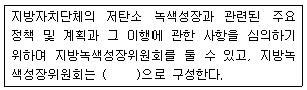
- 위원장 1명을 포함한 10명 이내의 위원
- 위원장 1명을 포함한 20명 이내의 위원
- 위원장 1명을 포함한 25명 이내의 위원
- 위원장 2명을 포함한 50명 이내의 위원
(정답률: 36%)
96. 온실가스ㆍ에너지 목표관리 운영 등에 관한 지침상 용어 정의 중 “관리업체가 법 및 시행령에 따른 목표관리를 받기 이전에 자발적이고 추가적으로 온실가스 감축을 위하여 행한 일련의 행동”을 의미하는 것은?
- 자율행동
- 조기행동
- 조직행동
- 관리행동
(정답률: 63%)
97. 온실가스ㆍ에너지 목표관리 운영 등에 관한 지침상 부문별 관장기관은 관리업체가 목표달성을 못하거나, 제출한 이행실적이 미흡한 경우에는 개선명령을 하여야 한다. 부문별 관장기관은 개선명령 등 관리업체에 대해 필요한 조치를 하고, 그 결과를 작성하여 누구에게 통보하여야 하는가?
- 대통령
- 국무총리
- 기획재정부장관
- 환경부장관
(정답률: 72%)
98. 온실가스ㆍ에너지 목표관리 운영 등에 관한 지침상 규정된 부문별 관장기관의 담당업무와 거리가 먼 것은?
- 심사위원회의 운영
- 관리업체의 선정ㆍ지정ㆍ관리 및 필요한 조치 등에 관한 사항
- 관리업체에 대한 온실가스 감축, 에너지 절약 등 목표의 설정
- 이행실적 및 명세서의 확인
(정답률: 42%)
99. 온실가스 배출권의 할당 및 거래에 관한 법률 시행령상 배출권의 전부를 무상으로 할당 할 수 있는 업종에 대한 기준으로 옳은 것은? (단, 매 계획기간마다 평가하여 할당계획에서 정함)
- 무역집약도가 100분의 5 이상이고, 생산비용발생도가 100분의 10 이상인 업종
- 무역집약도가 100분의 10 이상이고, 생산비용발생도가 100분의 5 이상인 업종
- 무역집약도가 100분의 10 이상이고, 생산비용발생도가 100분의 20 이상인 업종
- 무역집약도가 100분의 20 이상이고, 생산비용발생도가 100분의 10 이상인 업종
(정답률: 44%)
100. 온실가스 배출권의 할당 및 거래에 관한 법률상 배출권 할당위원회에서 심의ㆍ조정하는 사항과 가장 거리가 먼 것은?
- 할당계획에 관한 사항
- 시장 안정화 조치에 관한 사항
- 배출량의 인증 및 상쇄와 관련된 정책의 조정 및 지원에 관한 사항
- 독립적인 국내 탄소시장 체제 확립에 관한 사항
(정답률: 63%)
먼저, 기후변화 리스크를 파악하고 이를 분석하여 어떤 영향을 미칠지 예측한다. 그 다음으로, 이러한 기후변화 리스크를 평가하여 실제로 어떤 위험이 있는지 파악한다. 마지막으로, 이러한 평가 결과를 바탕으로 우선순위를 설정하여 대응책을 마련한다. 이러한 단계적인 절차를 통해 기후변화 리스크를 체계적으로 관리할 수 있다.